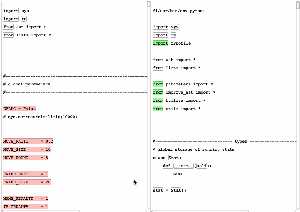

(click on the above picture for a demo)
Psydiff is a structural comparison tool for Python, written in Python itself. The main algorithm and UI of psydiff is almost the same as ydiff. If interested, you can see a demo of it here (psydiff comparing itself): http://www.yinwang.org/resources/pydiff1-pydiff2.html All the source code can be downloaded from my GitHub repo: http://github.com/yinwang0/psydiff It's still in early stage of development. I appreciate your bug reports, feature requests or contributions.